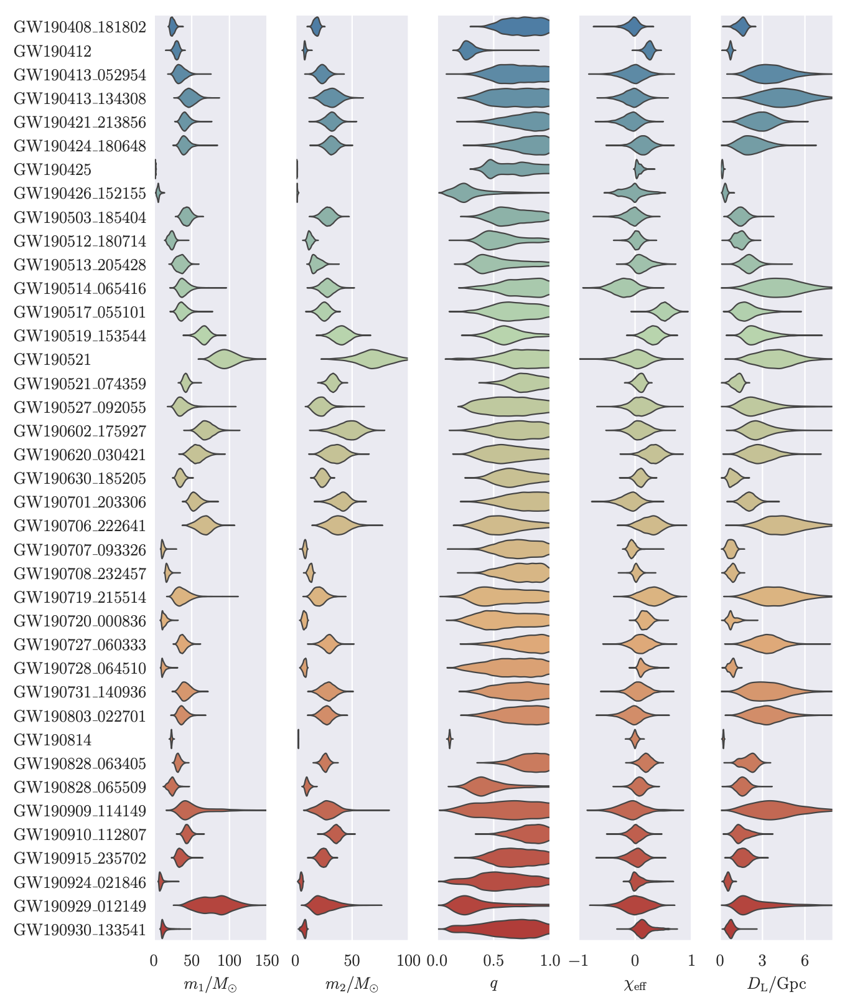
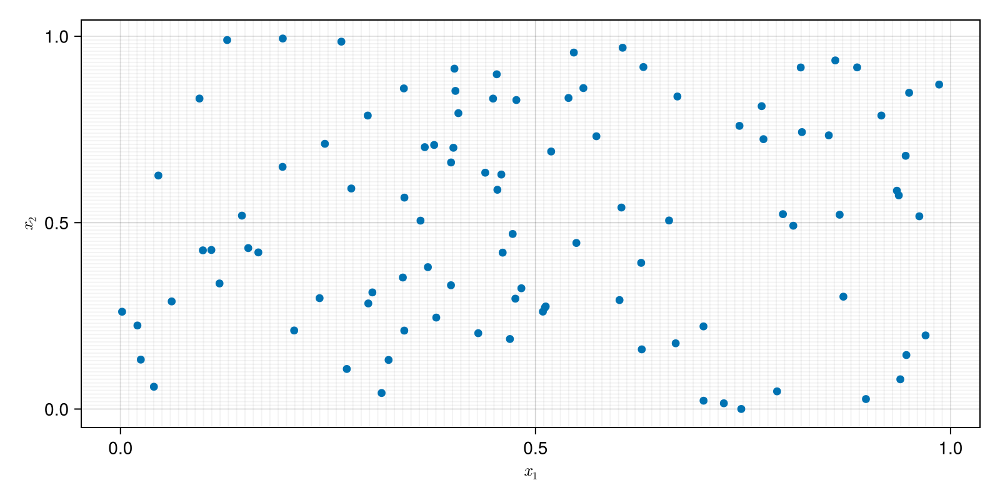

## Fitting Hierarchical Bayesian Models With Selection Effects in Astronomy [Will M. Farr](https://farr.github.io), CCA, 2024-10-24 <a href="https://github.com/farr/FWAM2024HierarchicalSelection"><img src="images/github-mark.png" height="128" width="128" /></a> --- I work in the LIGO-Virgo-Kagra Collaboration (LVK). We detect gravitational waves from merging black holes and neutron stars. <span class="attribution"><a href="https://www.ligo.caltech.edu/WA/image/ligo20150731f">LIGO</a></span> --- `$f_{\mathrm{GW},\mathrm{ISCO}} = 200 \, \mathrm{Hz} \frac{10 M_\odot}{M}$` <!-- .element: class="fragment"--> `$h = \mathcal{O}\left(1 \right) \frac{r_\mathrm{Schw}}{r} \simeq 2 \times 10^{-22} \, \frac{M}{10 M_\odot} \, \frac{10 Gpc}{r}$` <!-- .element: class="fragment"--> <img class="r-stretch" src="images/detection-figure3.png" /> <span class="attribution"><a href="https://ui.adsabs.harvard.edu/abs/2016PhRvL.116f1102A/abstract">Abbott, et al. (2016)</a></span> --- Evolution of LVK Catalogs: 2016 <img class="r-stretch" src="images/o1.png" /> <span class="attribution"><a href="https://ui.adsabs.harvard.edu/abs/2016PhRvX...6d1015A/abstract">Abbott, et al. (2016)</a> </span> --- Evolution of LVK Catalogs: GWTC-1 (2017) <span class="attribution"><a href="https://arxiv.org/abs/1811.12907">Abbott, et al. (2019)</a></span> --- Evolution of LVK Catalogs: GWTC-2 (2019)  <span class="attribution"><a href="http://arxiv.org/abs/2010.14527">Abbott, et al. (2021)</a></span> --- Evolution of LVK Catalogs: GWTC-3 (2020) <img class="r-stretch" src="images/gwtc-3.png" /> <span class="attribution"><a href="http://arxiv.org/abs/2111.03606">Abbott, et al. (2021)</a></span> --- Evolution of LVK Catalogs: Last Week at <a href="https://gracedb.ligo.org/superevents/public/O4/">GraceDB</a> <iframe class="r-stretch" data-src="https://gracedb.ligo.org/superevents/public/O4/" data-preload /> --- Black hole "mass function:" <span class="attribution"><a href="https://ui.adsabs.harvard.edu/abs/2023PhRvX..13a1048A/abstract">Abbott, et al. (2023)</a></span> --- Now we know: <div class="fragment" data-fragment-index="1"> **But how?** </div> - The most common black hole mergers involve `$10 \, M_\odot$` black holes. <span class="fragment" data-fragment-index="2">This is not most of what we see!</span> - The integrated rate is `$\sim 1 / 30 \, \mathrm{min}$` in the universe. <span class="fragment" data-fragment-index="3">Today we see one every few days!</span> <span class="attribution"><a href="https://ui.adsabs.harvard.edu/abs/2023PhRvX..13a1048A/abstract">Abbott, et al. (2023)</a></span> --- The actual observations: - Observational Uncertainty <!-- .element: class="fragment" --> - Selection Effects <!-- .element: class="fragment" --> --- <h2 class="r-fit-text">How Does this Work?</h2> --- <h2 class="r-fit-text">What is an "observation?"</h2> Catalogs are Poisson point processes --- Events have parameters `$x$` and occur with rate `$$\frac{\mathrm{d}N}{\mathrm{d} x}$$` <div class="r-stack">  </div> --- In each box of parameter space with volume `$\mathrm{d} x$` there are either: - Zero events, with probability `$$\exp\left(- \frac{\mathrm{d}N}{\mathrm{d} x} \mathrm{d} x\right)$$` - One event, with probability `$$\frac{\mathrm{d} N}{\mathrm{d} x} \mathrm{d} x \, \exp\left(- \frac{\mathrm{d}N}{\mathrm{d} x} \mathrm{d} x\right) $$` --- Boxes are independent, so `$$p\left(x_1, \ldots, x_N \right) = \left[ \prod_{i=1}^N \frac{\mathrm{d} N}{\mathrm{d} x_i} \right] \, \exp\left(- \sum_{\mathrm{boxes}} \frac{\mathrm{d}N}{\mathrm{d} x} \mathrm{d} x\right)$$` --- Boxes are independent, so `$$p\left(x_1, \ldots, x_N \right) = \left[ \prod_{i=1}^N \frac{\mathrm{d} N}{\mathrm{d} x_i} \right] \, \exp\left(- \int \mathrm{d} x \, \frac{\mathrm{d}N}{\mathrm{d} x} \right)$$` <p class="fragment">Where did the factorial go?</p> <p class="fragment">These events are distinguishable!</p> --- Let's fit a Poisson process: `$$\frac{\mathrm{d}N}{\mathrm{d} x} = a \exp\left( - \frac{1}{2} \left[ \frac{x - \mu}{\sigma} \right]^2 \right)$$` - <div class="fragment">$a$ is the rate at the peak</div> - <div class="fragment">$\mu$ is the location of the peak</div> - <div class="fragment">$\sigma$ is the width (s.d.) of the peak</div> --- Some [Julia](https://julialang.org) code: ```julia function population_logdensity_fn(a, mu, sigma) function pop_logdens(x) r = (x-mu)/sigma log(a) - r*r/2 end pop_logdens end function population_normalization(a, mu, sigma) a * sqrt(2*pi) * sigma end ``` --- For a catalog of observations, `$\mathbf{x}$`, `$$\mathbf{x} \sim \mathrm{Poisson}\left(\frac{\mathrm{d}N}{\mathrm{d} x}\left(a, \mu, \sigma \right) \right)$$` we have a [Turing](https://turinglang.org) model: ```julia @model function exact_model(xs) a ~ Uniform(50, 200) mu ~ Normal(0, 1) sigma ~ Exponential(1) pop_ldens = population_logdensity_fn(a, mu, sigma) Turing.@addlogprob! sum(pop_ldens.(xs)) Turing.@addlogprob! -population_normalization(a, mu, sigma) end ``` --- Draw a catalog, fit the model: ```julia Random.seed!(seed) a_true = 100.0 mu_true = 0.0 sigma_true = 1.0 xs = draw_x(a_true, mu_true, sigma_true) model = exact_model(xs) trace = sample(model, NUTS(1000, 0.8), 1000) ``` --- Result: --- In parameters: <img class="r-stretch" src="FWAM2024/figures/exact_model_parameters.png" /> --- What if we have uncertainty in the observations? `$$\mathbf{x} \sim \mathrm{Poisson}\left(\frac{\mathrm{d}N}{\mathrm{d} x}\left(a, \mu, \sigma \right) \right) \\ \mathbf{x}_\mathrm{obs} \sim N\left( \mathbf{x}, \mathbf{\sigma_\mathrm{obs}} \right)$$` ```julia @model function obs_model(xs_obs, sigma_obs) a ~ Uniform(50, 200) mu ~ Normal(0, 1) sigma ~ Exponential(1) xs ~ filldist(Flat(), length(xs_obs)) pop_ldens = population_logdensity_fn(a, mu, sigma) Turing.@addlogprob! sum(pop_ldens.(xs)) Turing.@addlogprob! -population_normalization(a, mu, sigma) xs_obs ~ arraydist([Normal(x, s) for (x,s) in zip(xs, sigma_obs)]) end ``` --- Result: <span class="attribution">Best name ever: "Extreme Deconvolution" <a href="https://arxiv.org/abs/0905.2979">Bovy, Hogg, & Roweis (2009)</a></span> --- In parameters: <img class="r-stretch" src="FWAM2024/figures/obs_model_parameters.png" /> --- What about selection effects? We can only "see" events with `$x_\mathrm{obs} > x_\mathrm{thresh} = -1$`. - Selection can only depend on observed parameters. <!-- .element: class="fragment" --> - The density at the observed events doesn't change, only exected number changes! <!-- .element: class="fragment" --> `$$\int \mathrm{d} x \, \frac{\mathrm{d} N}{\mathrm{d} x} \to \int_{x_\mathrm{obs} > x_\mathrm{thresh}} \mathrm{d} x_\mathrm{obs} \, \mathrm{d} x \, p\left( x_\mathrm{obs} \mid x \right) \frac{\mathrm{d}N}{\mathrm{d} x} $$` <!-- .element: class="fragment" --> <span class="attribution"><a href="https://ui.adsabs.harvard.edu/abs/2019MNRAS.486.1086M/abstract">Mandel, Farr, & Gair (2019)</a></span> --- *Do not* up-weight each event by the inverse detectability to account for un-observed events. *Do not* fit the rate of detectable events. Many such cases, alas! <span class="attribution"><a href="https://dfm.io/posts/histogram1/">DFM's Blog</a></span> --- But now we have an intractible integral: `$$\int_{x_\mathrm{obs} > x_\mathrm{thresh}} \mathrm{d} x_\mathrm{obs} \, \mathrm{d} x \, p\left( x_\mathrm{obs} \mid x \right) \frac{\mathrm{d}N}{\mathrm{d} x} $$` Monte-Carlo it: - `$x$` from distribution of your choice, `$x \sim p_\mathrm{draw}$` - `$x_\mathrm{obs}$` a mock observation of it - retain `$x$` if `$x_\mathrm{obs} > x_\mathrm{thresh}$` --- `$$\begin{align*} \int_{x_\mathrm{obs} > x_\mathrm{thresh}} & \mathrm{d} x_\mathrm{obs} \, \mathrm{d} x \, p\left( x_\mathrm{obs} \mid x \right) \frac{\mathrm{d}N}{\mathrm{d} x} \\ & \simeq \frac{1}{N_\mathrm{draw}} \sum_{x \in \mathrm{retained}} \frac{1}{p_\mathrm{draw}\left( x \right)} \frac{\mathrm{d}N}{\mathrm{d} x} \end{align*}$$` This is just pushing mock events through your detection pipeline! <!-- .element: class="fragment" --> There are some accuracy requirements on the integral, but they are not severe. <!-- .element: class="fragment" --> <span class="attribution"><a href="https://ui.adsabs.harvard.edu/abs/2019RNAAS...3...66F/abstract">Farr (2019)</a></span> --- `$$\begin{align*} \int_{x_\mathrm{obs} > x_\mathrm{thresh}} & \mathrm{d} x_\mathrm{obs} \, \mathrm{d} x \, p\left( x_\mathrm{obs} \mid x \right) \frac{\mathrm{d}N}{\mathrm{d} x} \\ & \simeq \frac{1}{N_\mathrm{draw}} \sum_{x \in \mathrm{retained}} \frac{1}{p_\mathrm{draw}\left( x \right)} \frac{\mathrm{d}N}{\mathrm{d} x} \end{align*}$$` ```julia function estimate_pop_normalization(pop_dens, xs, pdraw_xs, n) wts = pop_dens.(xs) ./ pdraw_xs mu = sum(wts) / n # Accuracy estimate s2 = sum(wts.*wts) / (n*n) - mu*mu/n neff = mu*mu / s2 (mu, neff) end ``` --- Let's fit a model with selection effects: ```julia @model function obs_selected_model(xs_obs, sigma_obs, xs_det, p_det, ndet) a ~ Uniform(50, 200) mu ~ Normal(0, 1) sigma ~ Exponential(1) xs ~ filldist(Flat(), length(xs_obs)) pop_ldens = population_logdensity_fn(a, mu, sigma) pop_dens = x -> exp(pop_ldens(x)) pop_norm, norm_neff = estimate_pop_normalization(pop_dens, xs_det, p_det, ndet) Turing.@addlogprob! sum(pop_ldens.(xs)) Turing.@addlogprob! -pop_norm xs_obs ~ arraydist([Normal(x, s) for (x,s) in zip(xs, sigma_obs)]) return (norm_neff = norm_neff, Nexp = pop_norm) end ``` --- Result: --- In parameters: --- Now you know how the sausage is made! [LVK catalog](https://gwosc.org/eventapi/html/GWTC/); [LVK injections](https://doi.org/10.5281/zenodo.5636815) --- Try it out: - Using the LIGO workhorse [gwpopulation](https://github.com/ColmTalbot/gwpopulation) (Talbot, et al. 2019). - Using GP population models from [Callister & Farr (2024)](https://ui.adsabs.harvard.edu/abs/2024PhRvX..14b1005C/abstract) - In [Julia](https://julialang.org) with [Turing](https://turinglang.org) using [PopModels.jl](https://github.com/farr/PopModels.jl) (Farr 2024). - In [JAX](https://github.com/jax-ml/jax) with clever machine-learned likelihoods using [FlowMC](https://github.com/kazewong/flowMC) with [GWTF](https://github.com/bfarr/GWTF) (Wong, Gabrie, & Foreman-Mackey 2022; Farr 2024). - Or write your own models in your favorite language!